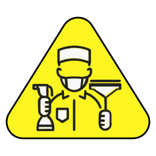

Laibade Sanitaarpuhastuse Büroo
Контакты
Laibade Sanitaarpuhastuse Büroo
Телефон:
53542369 (10:00-20:00
каждый день)
LSPBUROO@GMAIL.COM
Viber,
WhatsApp,
Telegram
Для описания ситуации, вы можете прислать видео и фото на
Viber,
WhatsApp,
Telegram либо на
email. Для более быстрой связи лучше использовать
Viber,
WhatsApp,
Telegram.
Профессиональная уборка помещений после внезапной смерти человека
Наша компания специализируется на профессиональной уборке помещений
после смерти человека, предоставляя комплексные услуги по очищению и
дезинфекции. Мы понимаем всю сложность ситуации и подходим к каждому
случаю с высокой степенью профессионализма, конфиденциальности и
ответственности.
Наши услуги включают в себя:
- Уборка после смерти человека
- Удаление крупного запаха
-
Обработку всех поверхностей, на которых остались следы крови и
биологических жидкостей, с применением специализированных
дезинфицирующих средств.
-
Удаление и вывоз мебели, ковров, напольных покрытий и других
элементов интерьера, на которые попали биологические загрязнения.
-
Расхламление и организация пространства после усопшего, чтобы помочь
вам избавиться от ненужных вещей и вернуть порядок в дом.
*Услуга оказывается дополнительно.
- Помощь в подготовке к продаже жилья (демонтаж, вывоз мусора)
Стоимость оказываемых услуг начинается от 180 евро (зависит от объёма
работ и оказываемых услуг)
Наши сотрудники обучены работать в сложных и нестандартных условиях.
Мы не боимся вызовов и готовы к любой ситуации, от мелкой уборки до
полной очистки помещения, чтобы вы могли сосредоточиться на важном,
зная, что оставляете процесс в руках надежных профессионалов.
Мы не просто убираем — мы помогаем вернуть покой вашему дому.
Kontakt
Laibade Sanitaarpuhastuse Büroo
Телефон:
53542369 (10:00-20:00
iga paev)
LSPBUROO@GMAIL.COM
Viber,
WhatsApp,
Telegram
Olukorra kirjeldamiseks võite saata video ja fotod
Viber,
WhatsApp,
Telegram või emaili
teel. Kiireks suhtlemiseks on parem kasutada
Viber,
WhatsApp,
Telegram
Professionaalne ruumide puhastus pärast inimese surma
Meie ettevõte pakub professionaalset koristusteenust pärast inimese
surma, pakkudes kompleksseid puhastus- ja desinfitseerimisteenuseid.
Mõistame olukorra keerukust ja lähme igale juhtumile vastu suure
professionaalsuse, konfidentsiaalsuse ja vastutustundega.
Meie teenused sisaldavad:
- Pärast inimese surma koristamine
- Tugeva lõhna eemaldamine
-
Kõigi pindade töötlemine, kuhu on jäänud vere- ja bioloogilisi
jälgi, spetsiaalsete desinfitseerimisvahenditega.
-
Mööbli, vaipade, põrandakatete ja muude bioloogiliselt saastunud
elementide eemaldamine ja kõrvaldamine.
-
Pärast lahkunut ruumi korrastamine ja liigsete esemete eemaldamine,
et taastada kord kodus.
*Teenus osutatakse lisatasu eest
-
Abi eluaseme müügiks ettevalmistamisel (lammutus, prügi äravedu).
Teenuste hind algab 180 eurost (sõltub töömahust ja pakutavatest
teenustest).
Meie töötajad on koolitatud töötama keerulistes ja ebatavalistes
tingimustes. Me ei karda väljakutseid ja oleme valmis igaks
olukorraks, alates väiksemast puhastusest kuni täieliku puhastuseni.
Me ei tee ainult koristust — me aitame teie kodus rahu taastada.
Contact
Laibade Sanitaarpuhastuse Büroo
Phone:
53542369 (10:00-20:00
every day)
LSPBUROO@GMAIL.COM
Viber,
WhatsApp,
Telegram
For a description of the situation, you can send video and photos on
Viber,
WhatsApp,
Telegram or by email.
For faster communication, it's best to use
Viber,
WhatsApp,
Telegram
Professional Cleaning of Premises After Sudden Death
Our company specializes in professional cleaning after a person's
death, providing comprehensive cleaning and disinfection services. We
understand the complexity of the situation and approach each case with
a high degree of professionalism, confidentiality, and responsibility.
Our services include:
- Cleaning after a person's death.
- Removal of strong odors.
-
Treatment of all surfaces where traces of blood and biological
fluids remain, using specialized disinfectants.
-
Removal and disposal of furniture, carpets, flooring, and other
elements contaminated by biological materials.
-
Decluttering and organizing space after the deceased to help you
remove unnecessary items and restore order at home.
*The service is provided at an additional cost.
-
Assistance in preparing the property for sale (demolition, waste
removal).
The cost of services starts from 180 euros (depending on the scope of
work and provided services).
Our staff are trained to work in complex and non-standard conditions.
We are ready for any situation, from minor cleaning to full-scale
restoration, so you can focus on what matters, knowing you leave the
process in reliable hands.
We don't just clean — we help restore peace to your home.